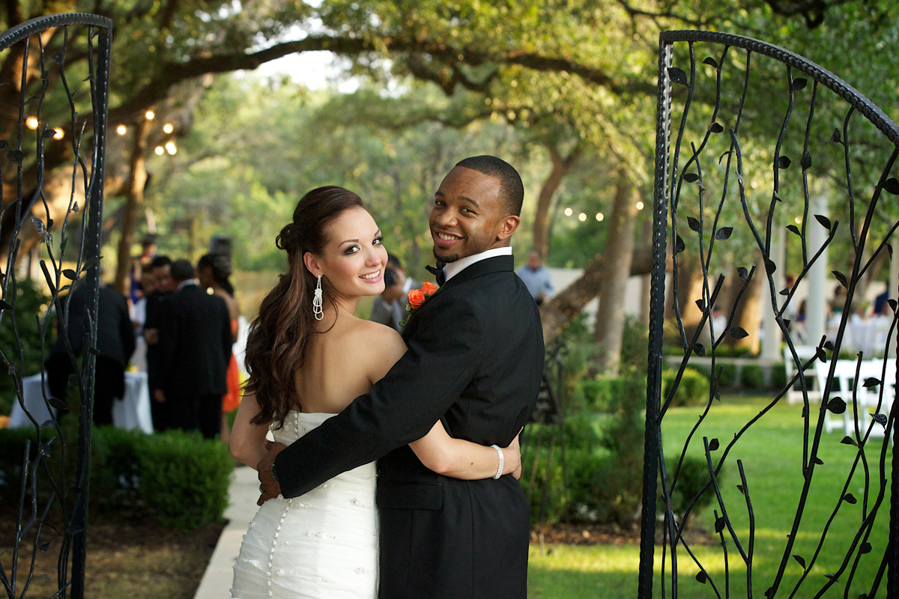
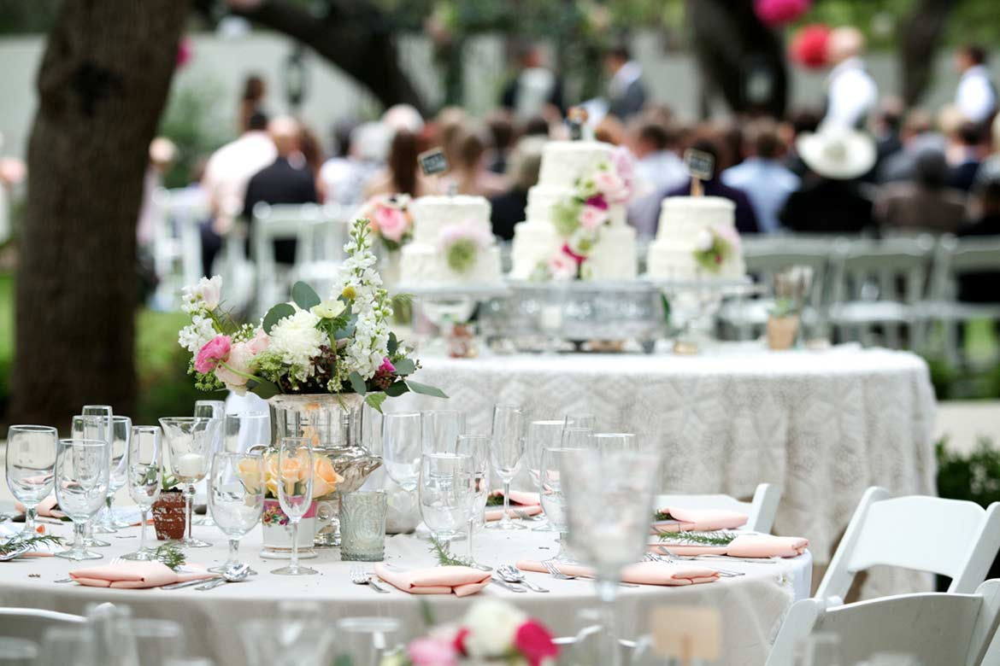
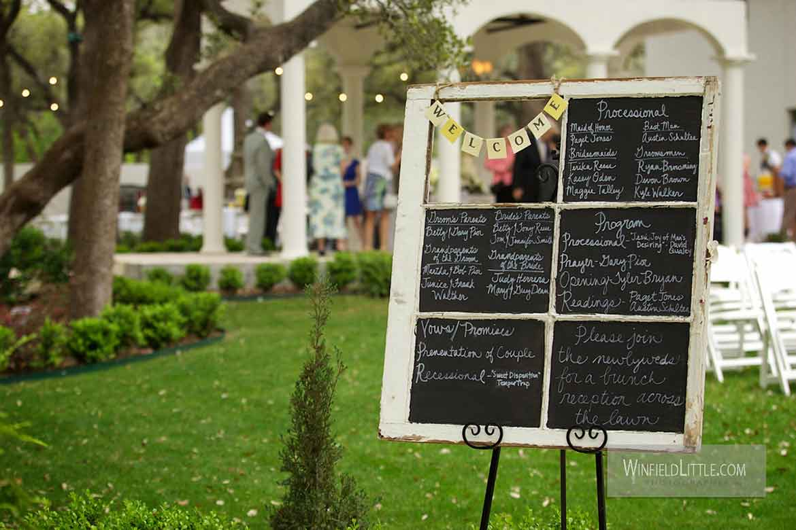

SAN ANTONIO, TX
The Gardens at West Green
A boutique garden wedding venue in San Antonio for intimate outdoor weddings of up to 80 guests.

About
The Gardens at West Green is a boutique garden wedding venue in San Antonio at 21650 Milsa Dr. The venue hosts intimate outdoor garden weddings, with a Petite Wedding Package for up to 80 guests that includes tables, chairs, linens, a sound system, and dressing rooms, and allows outside caterers, plus a flower wall, photo booth, and charcuterie, with tours by appointment.
Services
Intimate outdoor garden weddings
Petite Wedding Package for up to 80 guests
A Petite Wedding Package for up to 80 guests, with tables, chairs, linens, a sound system, and dressing rooms.
Outside caterers allowed
Flower wall, photo booth, and charcuterie
Tours by appointment
Gallery


Photos on this page are from The Gardens at West Green. Other pages use labeled stock photos.
Visit
Contact
Call to book: +1 210-698-9191 Email: weddings@thegardensatwestgreen.com
The Gardens at West Green serves San Antonio, TX. Questions? Call +1 210-698-9191.